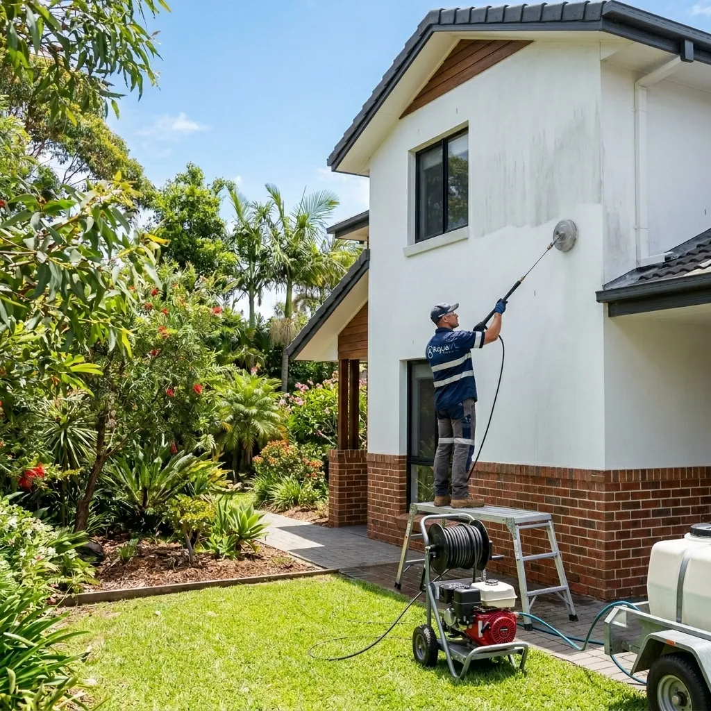

Truck & Fleet
Wash Adelaide
Keep your commercial fleet looking sharp and professional. On-site or mobile truck washing services tailored to your schedule and fleet size across Adelaide.
Your Fleet, Always
Looking Professional
A clean fleet is a statement — it tells your clients, partners and the public that you take pride in your business and your standards. Dirty, neglected vehicles can undermine the reputation you've worked hard to build.
AquaVL provides professional truck and fleet washing services across Adelaide. We come directly to your depot, yard or any agreed location, bringing all the equipment needed to complete the job on-site. Our flexible scheduling means we work around your operations, not the other way around — including after-hours and weekend availability for time-sensitive fleets.
Book a Free QuoteMobile Service
We come to your depot — no need to move your vehicles.
Flexible Hours
Early mornings, evenings and weekends available.
All Fleet Sizes
From single vehicles to large multi-truck operations.
All Vehicle Types
Trucks, reefers, curtain-siders, flat beds and more.
Fully Insured
Public liability insurance on every job.
Maintenance Programs
Regular scheduled contracts with priority service.
How It Works
Efficient, professional fleet washing designed to fit your operational schedule.
Fleet Assessment & Quote
We assess your fleet size, vehicle types, level of soiling and scheduling needs. We then provide a tailored quote with flexible service options to fit your operations.
Schedule & Access Confirmation
We confirm the service schedule, access arrangements and any site-specific safety requirements with your team. We work within your operational windows to minimise downtime.
Pre-Soak & Degreasing
We apply a pre-soak solution to the vehicle exterior, paying attention to heavily soiled areas such as wheel arches, underbody, and engine-facing panels. Industrial degreasers target road grime, grease and diesel residue.
High-Pressure Wash & Rinse
Each vehicle is systematically washed from top to bottom using commercial-grade pressure washing equipment. All panels, wheels, tyres, undercarriage and glass are cleaned thoroughly before a final rinse.
Completion & Sign-Off
We conduct a final check of all vehicles and hand off to your team. For scheduled programs, we maintain a service log and notify you of any vehicles with areas of concern noted during cleaning.
We Wash All Vehicles
From rigid trucks to articulated rigs — we have the equipment and experience for every vehicle type.
Semi-Trailers & B-Doubles
Full exterior wash for articulated trucks, semi-trailers and B-doubles including trailers and undercarriage.
Refrigerated Vehicles
Specialist cleaning of refrigerated trailers and bodies with attention to seals, doors and condensation panels.
Curtain-Siders & Flat Beds
Thorough cleaning of curtain-sided and flat bed trailers including load areas, straps and side rails.
Rigid Trucks & Vans
Rigid body trucks, pantech vans and commercial delivery vehicles washed to a consistently high standard.
Common Questions
Everything you need to know about our truck and fleet washing service.
Yes. We offer a fully mobile service and come directly to your depot, yard or any agreed location. No need to transport vehicles to a fixed wash bay — we bring everything required to your site.
We service fleets of all sizes — from a single commercial vehicle to large multi-truck operations. We tailor our service and scheduling around the size and needs of your fleet.
Yes. We have experience cleaning refrigerated trucks, curtain-siders, flat beds, tankers and other specialised commercial vehicles. We adjust our approach based on the vehicle type and any specific requirements.
Absolutely. We offer scheduled fleet wash programs — weekly, fortnightly or monthly — to keep your fleet consistently clean and professional. Regular contracts also receive priority scheduling.
We understand that fleet operations often run around the clock. We offer flexible scheduling including early mornings, evenings and weekends to minimise impact on your operations. Contact us to discuss your requirements.
Explore Our Other Services
We offer a full range of exterior cleaning solutions for Adelaide properties.

Driveway Cleaning
High-pressure washing that restores your driveway to like-new condition.
Learn more
Industrial Freezer Cleaning
Professional freezer room and cold storage cleaning for food facilities.
Learn more
Exterior House Washing
Soft-wash & pressure-wash for render, brick, weatherboard and cladding.
Learn more
Commercial Property Care
Full exterior maintenance packages for businesses & strata.
Learn moreReady for a Cleaner Fleet?
Contact AquaVL today to discuss a tailored fleet wash program for your business. We service Adelaide and surrounds.